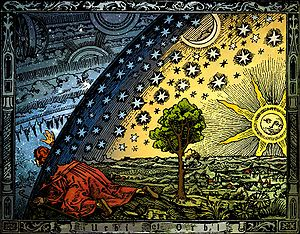

- 
Cosmos su sentido más general, es sinónimo de universo o mundo, el conjunto de todo lo existente, aunque también es empleado para referirse exclusivamente al espacio exterior a la Tierra. El término Cosmos además denota orden y organización, es el universo visto como un sistema ordenado o armonioso.
Originalmente fue una palabra utilizada por los antiguos griegos para designar la totalidad de la existencia. Los griegos creían que el cosmos se regía por una serie de leyes («nomos»), las cuales serían uno de los objetivos de comprensión de los primeros pensadores con los que se iniciaría entonces una versión embrionaria de la filosofía griega. Estas leyes, a su vez, se entendía que establecían un determinado orden («diké») antítesis de caos, caracterizado por el desequilibrio o desorden («adikía»). El tiempo en el cosmos no era concebido de forma lineal como lo es en la actualidad, sino de una forma cíclica: la periodicidad con la que se daban determinados fenómenos meteorológicos es ejemplo de ello (y entre otros). Conceptos como la nada, el no ser, el vacío, el infinito o lo ilimitado no eran comprensibles en la época en que aparece el término: la Civilización minoica, pues tampoco existían de facto. El estudio del cosmos, desde cualquier punto de vista, se llama cosmología.